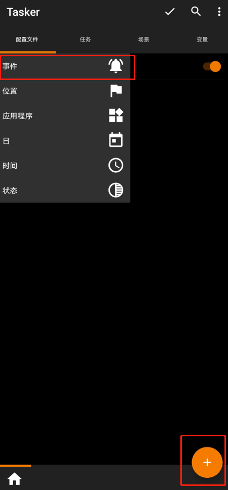
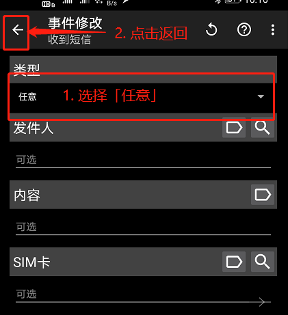
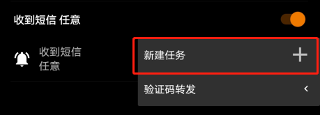
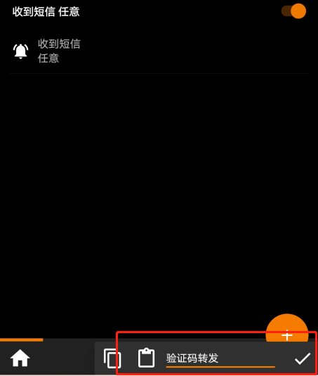
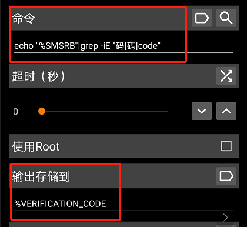
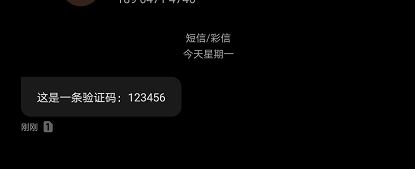
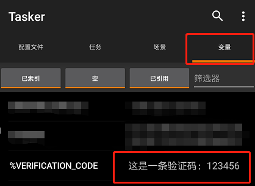

短信自动转发有很多使用场景，比如有两个单卡手机，一个手机不长用，但是要来接收验证码。这时候接收短信并直接推送给微信就方便的多； 我折腾这玩意最初的目的是因为和几个哥们合租的百度网盘，但是百度账号绑定的是我自己的手机号，为了哥们方便接收，便研究了一下这个功能； 原理是用Tasker 截取短信，并存储在变量中，再通过 HTTP 请求把内容输出出去。
前期准备
截取短信
首先我们在 配置文件 Tab 栏 点击右下角的 + 号：

点击 事务 → 电话 → 收到短信
类型选 任意 后直接返回

点击「新建任务」：

这里要你随意输入一个名称，我输入 验证码转发，进入「任务编辑」页面。

点击右下角的 + 号，选择 代码 → 运行Shell命令
「命令」中输入： echo "%SMSRB"|grep -iE "码|碼|code"
「输入存储到」随意输入一个以 % 开头的变量，这里我输入了 %VERIFICATION_CODE：

点击左上角返回
再点击右上角的 ✓ 保存
这里主要是把带码、碼、code 的短信，放在
%VERIFICATION_CODE这个变量中
接下来我们来试试看 Tasker 能不能截取到短信；
我用另一个手机号给本机发送一条带“码”字的短信：

然后打开 Tasker，选择变量 Tab 栏：

果然短信已经存入变量中了。